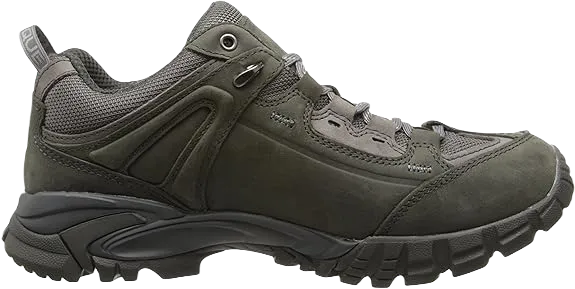

11 Best Shoes for Ankle Problems
The ankles are a crucial and delicate part of the feet, responsible for supporting the entire body's weight and maintaining balance with every step taken. Wearing shoes that cause discomfort to the ankles and foot joints can be incredibly painful. If the ankle is injured, it can hinder your ability to walk or wear shoes comfortably. Experiencing foot pain from an aching ankle can make walking, running, or even a simple stroll unbearable. This discomfort worsens if you continue to wear the shoes that are causing the problem.
Choosing the right shoes is essential for ensuring the comfort and well-being of your feet. With the proper footwear, you can enjoy a day of walking without discomfort. Shoes are designed to provide comfort, not to create discomfort. The best shoes for ankle problems should feature adequate cushioning and strong arch support to help alleviate pain and promote better foot health.
-
#1
Under Armour Men’s Valsetz RTS
.webp)
Without a doubt, this shoe deserves its top spot on the list. The Under Armour Men’s Velsetz shoe is specifically designed with features and qualities that cater to sore ankles, making it the best choice for ankle support. Its UA ClutchFit technology is particularly noteworthy, as it offers an ankle-friendly design.
This innovative technology wraps around and supports the injured ankle in a protective way, allowing you to walk comfortably throughout the day. The shoe is exceptionally lightweight, minimizing pressure and strain on both the ankle and toes. You'll be able to move swiftly, feeling as if you're gliding on clouds. For enhanced arch support and balanced gait, the TPU shank embedded in the midsole adds an extra layer of comfort. Additionally, the shoe is equipped with a Molded Ortholite sock-liner, providing smooth and gripping steps.
While the color options may be limited, this shoe is highly recommended for individuals dealing with annoying ankle pain and related issues. The comfort it provides is sure to leave you pleasantly surprised. -
#2
Dailyshoes Women’s Ankle Bootie
Are you tired of wearing old, inexpensive shoes that only add to your discomfort? It’s time to upgrade to this Daily Shoe for women. Crafted entirely from high-quality leather, the exterior enhances the shoe's appearance, giving it a chic and stylish look. Designed with a rugged construction, this shoe provides excellent grip and traction.
The anti-slip sole ensures a comfortable and safe walking experience, acting as a protective barrier. When navigating smooth or slippery surfaces, the robust sole prevents you from tripping or stumbling. This daily shoe is also constructed with durable vegan materials that enhance your pace and provide additional ankle protection.
The shoe features a waterproof texture, making it suitable for wet environments. Its unique lacing system helps maintain the proper balance of the ankle and foot arch. Inside, the soft insole delivers a cushioned feel for your feet and ankles during wear. The ultra-secure design of this Ankle Combat Boot provides essential ankle support. Known for its slip-resistant qualities, this shoe is highly regarded as one of the best options for ankle support. What customers love most about this footwear is its impressive durability and quality. -
#3
New Balance Men’s MW759
.webp)
The New Balance Men’s MW759 Country Shoe is crafted using advanced technology and 100% synthetic materials. It features cushioning and a soft fabric that are both shock-absorbent and resistant to jarring impacts. If you accidentally step on a rock or other hard surface, the shock-absorbing sole effectively relieves the strain on your feet.
Designed specifically for running and athletic activities, this shoe allows you to move freely without worrying about ankle pain or discomfort. Its high-quality mesh construction also provides water resistance, ensuring that your feet stay dry during various activities.
Whether you're hitting the trails or just looking for a reliable shoe for everyday wear, the New Balance MW759 combines comfort and functionality to support your active lifestyle. -
#4
RYKA Women’s Tenacity Cross-Trainer
.webp)
If you’re dealing with severe ankle pain and joint irritation, it's essential to choose footwear that prioritizes comfort and softness. The RYKA shoe stands out as one of the best options for sensitive ankles. It features a unique hook-and-strap system designed to offer a secure fit.
Additionally, the soft and cozy collar and tongue provide ongoing comfort, helping to alleviate discomfort in your aching ankles. Its solid construction makes it suitable for various environments, and the waterproof feature offers added protection.
The outsole is crafted from a specialized rubber compound that is highly resistant to UV rays and harsh weather conditions, enhancing the shoe's durability and reliability. Furthermore, its water-repellent properties ensure secure footing, even on slippery surfaces. The traction provided by the sole is impressive, making each step stable. The insoles are designed for excellent comfort and precise return, ensuring a supportive experience for your feet. -
#5
Brooks Women’s Addiction 13
.webp)
Brooks Shoe Company is well-known for creating stylish and comfortable footwear simultaneously. The Brooks women's shoe offers ample space for your toes and forefeet to adjust comfortably. During long walks, your joints can become sensitive and prone to pain, but the sole of this shoe delivers exceptional endurance, allowing you to walk with ease and minimal effort.
One notable feature of this shoe is its lower heel height, which helps distribute your body weight effectively while walking and running.
The stability it offers, as highlighted by physical therapists, is truly impressive. Crafted with superior construction, this shoe provides a comforting and relaxing experience for those dealing with ankle discomfort. -
#6
ASICS Women’s Gel-Kayano 24
.webp)
If you're struggling with painful ankles and foot joints, there's no need to try every shoe on the market when you can turn to the ASICS Gel-Kayano women's shoe. Designed specifically for women with sensitive or aching ankles, this shoe is perfect for those who spend long hours on their feet, providing ultra comfort and ankle support with every step. The breathable mesh upper ensures that your feet stay well-ventilated during hot summer days or humid conditions, promoting overall foot health.
Crafted from high-quality materials, this shoe features an abundance of cushioning and a well-structured footbed for optimal support. The flexible, soft cushioning transforms all-day fatigue into comfort and revitalization. With a snug fit and molded contour to accommodate various foot shapes, the shoe’s rear-foot gel technology effectively absorbs shock and minimizes the impact of jarring movements.
For added safety and protection, the outsole is constructed from a special rubber alloy, enhancing the shoe's durability significantly. The combination of premium features ensures that the ASICS Gel-Kayano women's shoe provides both comfort and long-lasting wear. -
#7
HOKA ONE men’s shoe
The HOKA men’s shoe featured in this list is specifically designed for individuals dealing with ankle issues. Its upper is crafted from a breathable mesh that ensures adequate airflow, allowing your feet to stay cool and comfortable.
Durability is a key feature of this shoe, thanks to the high-quality Lycra material that shields your feet from harsh outdoor conditions. The rocker sole serves as a supportive companion when you make contact with the ground, effectively reducing joint movement. Additionally, the shoe includes ample soft cushioning, which keeps your ankles, toes, forefoot, and heel feeling calm and relaxed. The rubber outer sole provides excellent traction and flexibility, making it ideal for dental hygienists or anyone who needs to walk quickly.
What truly sets this shoe apart is its exceptionally high-quality sole, which boasts 2.5 times more volume than typical shoes. This makes it versatile enough to be worn both on and off the road, performing remarkably well in any environment. The thoughtful design and comfort-oriented construction of this shoe place it at the top of the list for the best footwear for ankle problems. -
#8
GORE-TEX Pro Hiking Boots
Opting for this shoe to alleviate your painful ankles is a smart choice, especially if your job requires you to stand or walk for extended periods. This hiking boot is crafted from superior materials that ensure both durability and strength.
The upper is made from high-quality leather, which enhances its longevity. Additionally, the Vibram EVO feature offers exceptional comfort for your ankles and joints. The D-ring lacing system and mid-rise silhouette further enhance comfort, allowing for a secure fit.
During hot summer days, your feet can easily become sweaty and warm, necessitating good airflow. The Gore-Tex lining in this shoe effectively wicks away moisture, keeping your feet dry and comfortable. The midsole features a Monowrap frame, which provides a supportive and cozy feel. With its tall and stylish design, this boot is not only suitable for hiking but also ensures that your ankles remain well-balanced and supported, thanks to its thoughtfully engineered sole. -
#9
New balance M1080v8
.webp)
New Balance has long been a top choice for those seeking comfort and relaxation. Standing or walking for extended periods can take a toll on your feet, especially if you experience pain in your foot joints and ankles. You deserve a shoe that prioritizes comfort, and this model delivers just that. The mesh upper allows for excellent ventilation, so you won't have to worry about sweaty feet while wearing them.
Constructed with high-quality synthetic fabric, this shoe also features a rubber outsole that provides excellent grip, reducing the risk of slips and falls. Whether you're running, jogging, or simply enjoying a leisurely walk, the New Balance M1080v8 men’s shoe offers exceptional support for sore ankles. Its lace-up design adds a stylish touch, while the midsole is equipped with Fresh Foam for enhanced arch support.
Designed for versatility, this shoe performs well on various surfaces. The insoles are made with Ortholite material, providing shock absorption and added comfort. Both the inner and outer soles are engineered based on data-driven insights, ensuring a superior fit. Available in a variety of colors and styles, the New Balance men’s M1080v8 allows you to choose the perfect pair that suits your taste. -
#10
Skechers Go Walk Evolution
.webp)
Skechers is a highly trusted and reliable brand among customers seeking comfortable footwear. If you’re looking for a shoe that soothes your ankles while maintaining an elegant look, Skechers comes highly recommended. The heel of this shoe is specially designed to provide both comfort and additional support. Made from breathable materials, it promotes the overall health of your feet and alleviates ankle pain.
This non-binding shoe offers ample depth and space, allowing your feet to adjust comfortably without causing pain in the ankles. It plays a crucial role in minimizing irritation and discomfort, especially for those who spend long hours on their feet. The Skechers Go Walk Evolution shoe includes a secure strap for a snug fit, enabling you to move swiftly without any concerns about safety or fit.
Additionally, the shoe features a reliable lacing system that ensures a secure fit. The closure ties help reduce the risk of tripping and slipping, providing you with confidence as you walk or run. -
#11
Saucony Women’s ProGrid Integrity ST2
.webp)
If you're looking to alleviate ankle pain without resorting to surgery or visits to a chiropodist, choosing the right shoe can make a significant difference. The selection of footwear plays a crucial role in either alleviating or exacerbating foot pain. This Saucony model is crafted entirely from high-quality leather, ensuring durability and comfort.
Its outsole features gripping rubber for excellent traction, while the shoe's foamy construction provides a squishy feel, making it feel like you’re gliding when walking or running. Additionally, the padded collar, tongue, and cushioning are designed to enhance comfort for your feet.
Beyond just comfort, this shoe offers additional benefits as well. The antimicrobial insoles promote better foot health by preventing germs from making contact with your feet. The outsole guarantees reliable traction, providing a secure grip with every step. The walk-trac sole performs exceptionally well on various surfaces, ensuring you can navigate different terrains with confidence.